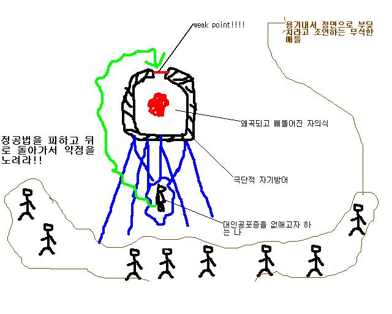

<pre>
<font color="red"><b>TITLE 055 : 대인 공포증 원인 분석 및 치료 방안...4(수정)
</b></font>날짜 : 2005.11.20 16:55

4. 인간의 비합리성을 이용한 대인공포증 치료 방향 제시

인간의 감정은 때때로 이성을 마비시킨다.

그리고 스스로 이성의 행세를 하기 시작한다.
 
두개의 상반된 주장이 제기되었을 때, 이성은 조금 더 합리적인 주장의 편을 든다.

감정에 지배 당한 상태의 사람에게는 더 강한 감정적 호소만이 그를 움직일 수 있다.

이 점을 대인공포증의 치료에 응용할 수 있다.

어두운 밤길에 누군가 낯설은 남자가 계속 당신의 뒤를 쫓아온다면, 당신의 발걸음은 빨라질 것이다.

도망치다 시피 걸어서 다다른 곳이 막다른 길이라면, 그남자가 당신을 똑바로 쳐다보고 다가온다면, 당신은 뒷걸음질 칠 것이다.

왜 뒷걸음질 치는가?

긴장감 도는 이 상황에서 당신이 이성적으로 뒷걸음질 치는 행위를 이끌어 냈으리라 보진 않는다.

그것은 '두려움'이 이성을 마비시킨 후 그 대체기능을 수행하였기에 행위라고 볼 수 없다.

주어진 지시대로 '동작'한 것 뿐이다.

그렇다면, 여러분이 여러분의 몸에 어떤 '지시'를 내렸을 때 아무런 거부반응 없이 '작동'할 수 있다면,
여러분은 타인에게 말도 먼저 걸 수 있고 무대에 나가 춤도 출 수 있다.

불가능 하다 생각한다면, 이 세상에서 '자살 폭탄 테러'가 왜 일어날 수 밖에 없는지 또한 생각해 보아야 한다.

생존 본능을 압도하는 어떤 '감정'이 그들을 지시한 것이다.

우리의 이성이 이러한 감정을 '유도'할수 있음을 안다면,
우리는 지금까지 알고 있었던 의지의 자유와 제한에 대한 개념의 재정립이 필요할 것이다.

사람들 누구나 이러한 방식을 쓰며 살아가고 있다. 그에대한 정확한 인식이 부족할 뿐이다.

그 방식도 가지가지 라서 단편적인 예로 감을 잡기는 힘들겠지만, 서너개의 예시를 들어보기로 한다.

좋아하는 이성에게 고백할 용기가 안나 술을 마신다 
어떤 상대에게 직접 말하기 곤란한 내용을 편지 등으로 대신 전한다 
치과에 가기 싫어하는 아이의 두려움을 덜기 위해 하나도 안아프다고 말해준다 
어떤 상대와 친해지기 위해 그 친구와 같은 취미생활이나 특별 활동에 참여한다
이제 조금 감이 잡혔을 것이다.



그림이 좀 지저분 하지만 살펴보기로 하자

주변사람들 모두가 하나같이 용기내서 정면돌파 하라고 하고 있다.

(조언해주시는 분들의 성의를 무시하는 것은 아닙니다. 지우려고 했으나 어떻게 지우는지 몰라요;;)

그 말을 믿고 나의 자의식은 마메파 시즈박고벙커와 서플로 완전히 둘러싼 성벽에 저글링을 꾸준히 보내 케찹을 만들고 있다. 

스타를 모르는사람들을 위해 다시 표현하자면 계란으로 바위쳐서 계란이 다 깨지고 있으며
자의식은 점점 '계란을 아무리 던져도 바위가 안깨져'라고 외치며 OTL(좌절)하고 있다.

무식하게 배짱으로 밀어붙인다고 다 되는게 아니다.

그림의 의도가 좀 엇나간듯 하나(본인의 그림실력이 형편이 가난해서)

무조건 부딪치고 보자는 생각 하나로 반드시 성공할 순 없으며
잠깐 비껴 뒤로 돌아가면 쉽게 공략할 수 있는 틈을 찾을수도 있다는 얘기다.

극단적 자기방어의 철벽이 완전히 둘러쌓이지 않은 어떤 틈이 분명 있을 것이다.

물론 그 틈은 사람마다 같을 수는 없다.

예를들어 보통 자기 가족들 대할때도 불편한 증세를 보이는것이 대인공포증가진 사람들 일반적 성향이지만,
자기 가족한테 만큼은 마음을 열고 있는 경우의 사람이 간혹 있다.

이 경우에 이사람이 집중 공략할수 있는 하나의 아이템으로서 가족이 있는 것이다.

(개인적으로 가족만으로 도움이 될수는 없다고 보기는 한다)

이제 자기자신한테 질문을 던져보자.

자신의 시야에 보이는 벽만을 보고 '내 앞엔 벽밖에 없어, 난 아무것도 못해' 라고 생각하지 않았는가?

진심으로 구석구석 틈을 찾아 보았다고 맹세할수 있는가?

물론, 그럴 틈을 찾을수 없는 경우도 있을 것이고, 대인공포증 치료법이 이것만 있는것도 아니니,

다른 방법을 강구해야 할수도 있다.

그렇지만, 틈을 찾아서 공략하는 간접적인 시도를 내가 강추하는 이유가 무엇인지 아는가?

가장 용기 덜 필요하기 때문에 가장 쉬운 방법일 수 있는 것이다.

물론 항상 피해가고 돌아가면서 몸사려가며 문제해결 하는 자세가 옳은 것은 아니다.

그렇지만, 대인공포증의 치료가 더 우선하므로 방법을 따질 문제가 아니다.

다음 장에서는 이러한 방식으로 내가 어떻게 고쳤는가를 외전격으로 다루어 보겠다.
</pre>
